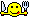

阿空 Kong
被室友的朋友無禮地連續敲門吵醒，竟然不怎麼生氣。
2010-09-13 09:40:49
Responses :
latest
SALT.BB喵
話す
有重要事?
嘖♥♥
話す
早安!!
Takehiro
話す
早阿
阿空 Kong
dancepriest
: 他只是想找我室友，但室友早已出門
阿空 Kong
achie829
: 痾..不是耶..雖然他應該算有點型，但完全不是我的菜
HsInHaN
話す
cheesek
話す
那你可以試試看指穿內褲去開門...
Vince
話す
可以試試看沒穿內褲去開門~
派克(Pax)
話す
因為他帥嗎!
WOWWOW
話す
因為不是討厭的人
阿空 Kong
vin26
: 醒來時原本是這麼想的，所以還蠻後悔自己後來孬掉了 T^T
達文豬
話す
哈哈哈 少了一次機會
看什麼KAN
話す
痞子拋克®/Pauke™
話す
因為佛心來的
北投小徹
話す
不穿內褲去開門 還真屌
痞子拋克®/Pauke™
話す
torocats750219
: 那我可以去敲門嗎
阿空 Kong
Pauke
: 教練，我想睡覺....T^T
伊諾。F
話す
kong0107
: 那我來去敲敲看好了...
阿空 Kong
enoshop
: 一一..現場的你都看過了還敲
伊諾。F
話す
kong0107
: 情境不一樣咩!工作跟生活感受還是有落差的~~~
Takehiro
話す
可以報名敲門嗎?(臉紅)
痞子拋克®/Pauke™
話す
kong0107
: 我變成教練了喔?? 哈 那我可以操你嗎??
阿 湯
話す
kong0107
: 我也要報名敲門0.0
阿空 Kong
可以收敲一次$100嗎？....
痞子拋克®/Pauke™
話す
kong0107
: 我付 
阿 湯
話す
kong0107
: 那我敲一下你就要開了喔XD